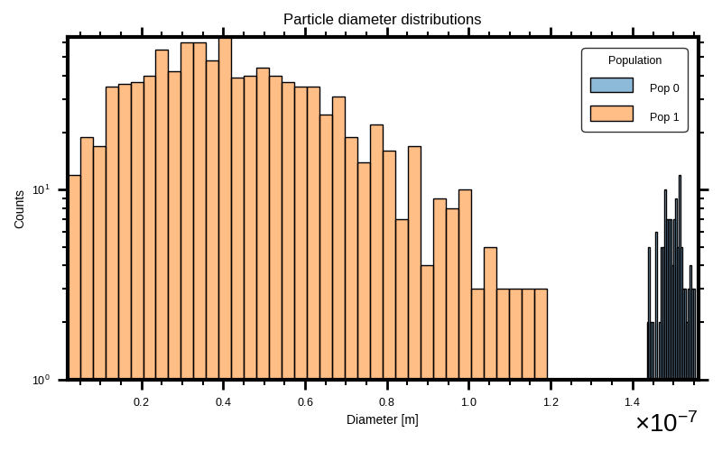
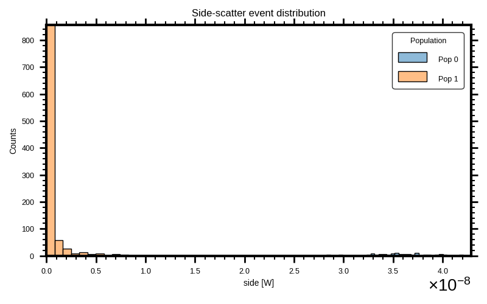
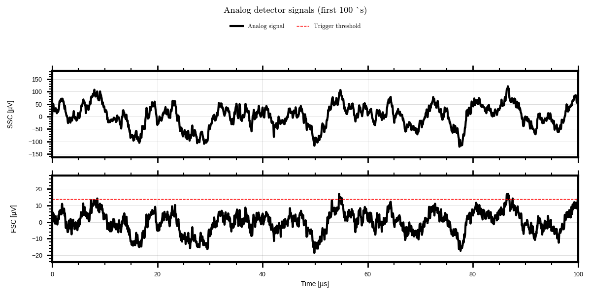
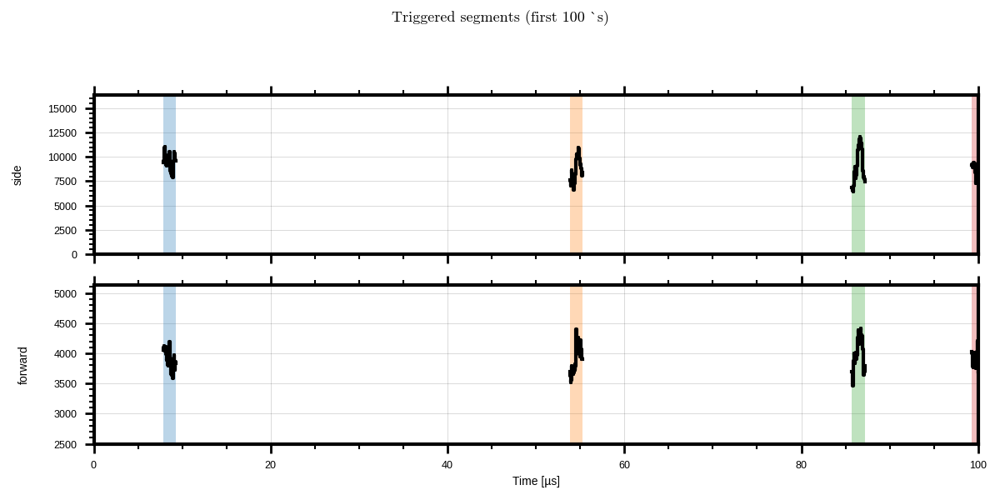
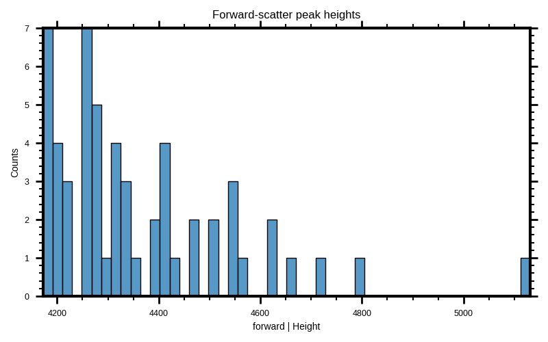
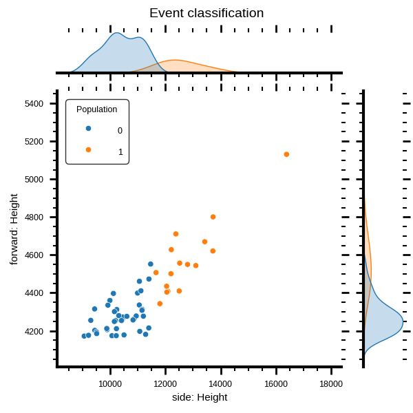

Note
Go to the end to download the full example code.
Workflow API#
This tutorial demonstrates a complete flow cytometry simulation using the FlowCyPy library. It models fluidics, optics, signal processing, and classification of multiple particle populations.
Steps Covered:#
Configure simulation parameters and noise models
Define laser source, flow cell geometry, and fluidics
Add synthetic particle populations
Set up detectors, amplifier, and digitizer
Simulate analog and digital signal acquisition
Apply triggering and peak detection
Classify particle events based on peak features
from FlowCyPy.workflow import (
ureg,
Workflow,
Detector,
circuits,
FlatTop,
peak_locator,
discriminator,
distributions,
populations,
GammaModel,
classifier,
)
def format_figure(figure):
for axis in figure.axes:
axis.tick_params(labelsize=9)
axis.xaxis.label.set_size(10)
axis.yaxis.label.set_size(10)
axis.title.set_size(12)
legend = axis.get_legend()
if legend is not None:
legend.get_title().set_fontsize(9)
for text in legend.get_texts():
text.set_fontsize(9)
figure.tight_layout()
return figure
def format_signal_figure(figure, signal, title):
time_unit = signal.attrs["units"]["Time"]
window_end = (100 * ureg.microsecond).to(time_unit).magnitude
channel_names = [column for column in signal.columns if column != "Time"]
for axis, channel_name in zip(figure.axes, channel_names):
axis.set_xlim(0, window_end)
axis.yaxis.set_label_position("left")
axis.yaxis.set_ticks_position("left")
axis.tick_params(labelsize=9)
axis.xaxis.label.set_size(10)
axis.yaxis.label.set_size(10)
axis.grid(True, alpha=0.2)
if channel_name in signal.attrs["units"]:
channel_label = {"side": "SSC", "forward": "FSC"}.get(
channel_name, channel_name
)
channel_unit = format(signal.attrs["units"][channel_name], "~")
axis.set_ylabel(f"{channel_label} [{channel_unit}]", fontsize=10)
legend = axis.get_legend()
if legend is not None:
handles, labels = axis.get_legend_handles_labels()
legend.remove()
figure.legend(
handles,
[
"Analog signal"
if "analog" in label.lower()
else "Trigger threshold"
for label in labels
],
loc="upper center",
bbox_to_anchor=(0.5, 0.94),
ncol=len(handles),
frameon=False,
fontsize=9,
)
figure.suptitle(title, fontsize=13)
figure.axes[-1].set_xlabel(f"Time [{format(time_unit, '~')}]", fontsize=10)
figure.tight_layout(rect=(0, 0, 1, 0.86 if figure.legends else 0.91))
return figure
Define the particle mixture#
Specify the size, refractive index and concentration of each population.
population_0 = populations.SpherePopulation(
name="Pop 0",
medium_refractive_index=distributions.Delta(1.33),
concentration=1e10 * ureg.particle / ureg.milliliter,
diameter=distributions.RosinRammler(
scale=150 * ureg.nanometer,
shape=50,
low_cutoff=50.0 * ureg.nanometer,
),
refractive_index=distributions.Normal(
mean=1.44,
standard_deviation=0.002,
low_cutoff=1.33,
),
)
population_1 = populations.SpherePopulation(
name="Pop 1",
medium_refractive_index=distributions.Delta(1.33),
concentration=5e17 * ureg.particle / ureg.milliliter,
diameter=distributions.RosinRammler(
scale=50 * ureg.nanometer,
shape=2,
),
refractive_index=distributions.Normal(
mean=1.44,
standard_deviation=0.002,
low_cutoff=1.33,
),
sampling_method=GammaModel(number_of_samples=1_000),
)
Configure detection and processing#
Set the collection angles, trigger threshold, peak locator and analog filters.
detector_0 = Detector(
name="side",
phi_angle=90 * ureg.degree,
numerical_aperture=1.2,
responsivity=1 * ureg.ampere / ureg.watt,
)
detector_1 = Detector(
name="forward",
phi_angle=0 * ureg.degree,
numerical_aperture=0.3,
cache_numerical_aperture=0.1,
responsivity=1 * ureg.ampere / ureg.watt,
)
discriminator = discriminator.DynamicWindow(
trigger_channel="forward",
threshold="2sigma",
pre_buffer=40,
post_buffer=40,
)
peak_locator = peak_locator.GlobalPeakLocator(compute_width=False)
analog_processing = [
circuits.BaselineRestorationServo(time_constant=10 * ureg.microsecond),
circuits.BesselLowPass(cutoff_frequency=2 * ureg.megahertz, order=4, gain=2),
]
source = FlatTop(
waist_z=10e-6 * ureg.meter, # Beam waist along flow direction (z-axis)
waist_y=60e-6 * ureg.meter,
wavelength=405 * ureg.nanometer,
optical_power=200 * ureg.milliwatt,
include_shot_noise=True,
include_rin_noise=True,
rin=-200 * ureg.dB_per_Hz,
bandwidth=10 * ureg.megahertz,
)
Build the workflow#
Combine fluidics, optics and electronics into a reusable simulation.
workflow = Workflow(
source=source,
sample_volume_flow=80 * ureg.microliter / ureg.minute,
sheath_volume_flow=1 * ureg.milliliter / ureg.minute,
width=200 * ureg.micrometer,
height=100 * ureg.micrometer,
population_list=[population_0, population_1],
gain=10 * ureg.volt / ureg.ampere,
bandwidth=10 * ureg.megahertz,
bit_depth=14,
dilution_factor=100,
sampling_rate=60 * ureg.megahertz,
use_auto_range=True,
background_power=0.001 * ureg.milliwatt,
detectors=[detector_0, detector_1],
analog_processing=analog_processing,
discriminator=discriminator,
peak_locator=peak_locator,
)
Run the acquisition#
Initialize the model and acquire one millisecond of particle events.
workflow.initialize()
run_record = workflow.run(run_time=1 * ureg.millisecond)
Inspect particle sizes#
Check the sampled diameter distribution before examining the detector response.
_ = format_figure(
run_record.event_collection.plot(
x="Diameter",
figure_size=(8, 5),
yscale="log",
title="Particle diameter distributions",
)
)

Step 5: Plot Events and Raw Analog Signals#
_ = format_figure(
run_record.event_collection.plot(
x="side",
figure_size=(8, 5),
title="Side-scatter event distribution",
)
)

Plot raw analog signals#
_ = format_signal_figure(
run_record.plot_analog(figure_size=(12, 6), include_scatterer=False),
run_record.signal.analog,
"Analog detector signals (first 100 µs)",
)

Step 6: Plot Triggered Analog Segments#
_ = format_signal_figure(
run_record.plot_digital(figure_size=(12, 6), include_scatterer=False),
run_record.signal.digital,
"Triggered segments (first 100 µs)",
)

Step 7: Plot Peak Features#
_ = format_figure(
run_record.plot_peaks(
x=("forward", "Height"),
figure_size=(8, 5),
title="Forward-scatter peak heights",
)
)

Step 8: Classify Events from Peak Features#
class_ = classifier.KmeansClassifier(number_of_clusters=2)
classification = class_.run(
dataframe=run_record.peaks.unstack("Detector"),
features=["Height"],
detectors=["side", "forward"],
)
_ = classification.plot(x=("side", "Height"), y=("forward", "Height"))

Total running time of the script: (0 minutes 4.447 seconds)